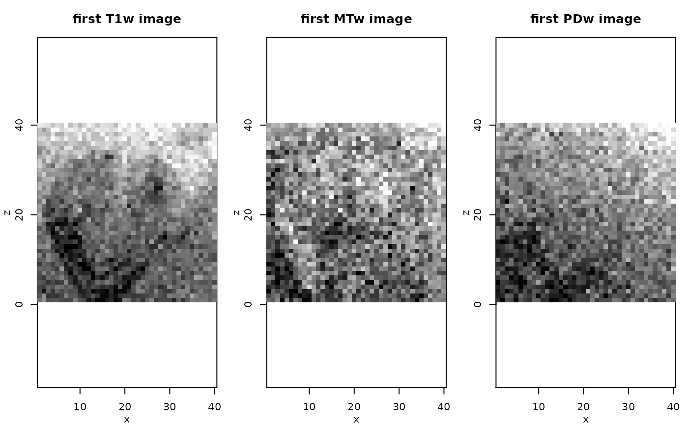
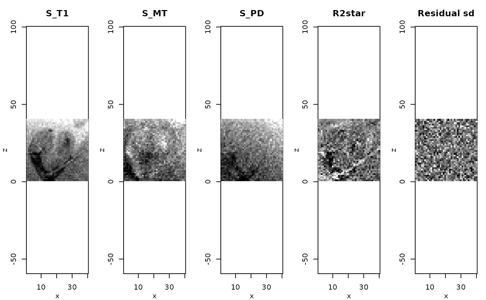
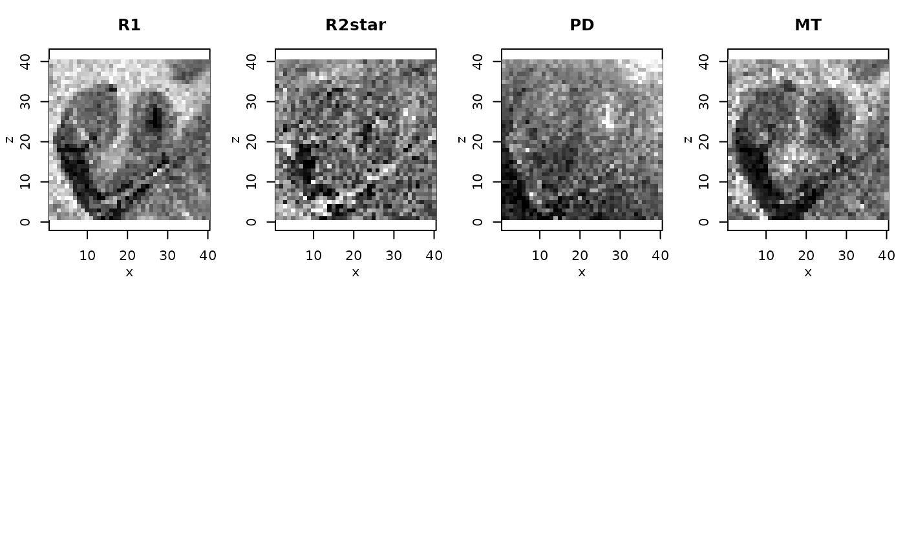

"MPMData",
"ESTATICSModel", "sESTATICSModel"
and "qMaps".extract-methods.RdThe extract-methods extract and/or compute specified statistics from object of class
"MPMData", "ESTATICSModel", "sESTATICSModel"
and "qMaps".
The [-methods can be used to reduce objects of class
"MPMData", "ESTATICSModel", "sESTATICSModel"
and "qMaps" such that they .
# S3 method for MPMData
extract(x, what, ...)
# S3 method for ESTATICSModel
extract(x, what, ...)
# S3 method for sESTATICSModel
extract(x, what, ...)
# S3 method for qMaps
extract(x, what, ...)
# S3 method for MPMData
[(x, i, j, k, ...)
# S3 method for ESTATICSModel
[(x, i, j, k, ...)
# S3 method for sESTATICSModel
[(x, i, j, k, ...)
# S3 method for qMaps
[(x, i, j, k, ...)| x | object of class |
|---|---|
| what | Character vector of of names of statistics to extract. See Methods Section for details. |
| i | index vector for first spatial dimension |
| j | index vector for second spatial dimension |
| k | index vector for third spatial dimension |
| ... | additional parameters, currently unused. |
Returns a warning for extract
Depending the occurence of names in what a list with the specified components
is returned
"ddata"mpm data
"sdim" dimension of image cube
"nFiles" number of images / image files
"t1Files" character - filenames of t1Files
"pdFiles" character - filenames of pdFiles
"mtFiles" character - filenames of mtFiles
"model" Number of the ESTATICS model that can be used
"maskFile" character - filenames of maskFile
"mask" mask
"TR" vector of TR values
"TE" vector of TE values
"FA" vector of FA values
Depending the occurence of names in what a list with the specified components
is returned
"modelCoeff"Estimated parameter maps
"invCov" map of inverse covariance matrices
"rsigma"map of residual standard deviations
"isConv" convergence indicator map
"isThresh" logical map indicating where R2star==maxR2star.
"sdim" image dimension
"nFiles" number of images
"t1Files" vector of T1 filenames
"pdFiles" vector of PD filenames
"mtFiles" vector of MT filenames
"model" model used (depends on specification of MT files)
"maskFile" filename of brain mask
"mask" brain mask
"sigma" sigma
"L" L
"TR" TR values
"TE" TE values
"FA" Flip angles (FA)
"TEScale" TEScale
"dataScale" dataScale
Depending the occurence of names in what a list with the specified components
is returned
"modelCoeff"Estimated parameter maps
"invCov" map of inverse covariance matrices
"rsigma" map of residual standard deviations
"isConv" convergence indicator map
"bi" Sum of weights map from AWS/PAWS
"smoothPar" smooting parameters used in AWS/PAWS
"smoothedData" smoothed mpmData
"isThresh" logical map indicating where R2star==maxR2star.
"sdim" image dimension
"nFiles" number of images
"t1Files" vector of T1 filenames
"pdFiles" vector of PD filenames
"mtFiles" vector of MT filenames
"model" model used (depends on specification of MT files)
"maskFile" filename of brain mask
"mask" brain mask
"sigma" sigma
"L" L
"TR" TR values
"TE" TE values
"FA" Flip angles (FA)
"TEScale" TEScale
"dataScale" dataScale
Depending the occurence of names in what a list with the specified components
is returned
b1Map b1Map
R1 Estimated map of R1
R2star Estimated map of R2star
PD Estimated map of PD
MT Estimated map of delta (if MT-series was used)
model Type of ESTATICS model used
t1Files filenames T1
mtFiles filenames MT
pdFiles filenames PD
mask brainmask
A list with components carrying the names of the options specified in
argument what.
Karsten Tabelow tabelow@wias-berlin.de
J\"org Polzehl polzehl@wias-berlin.de
dataDir <- system.file("extdata",package="qMRI")
#
# set file names for T1w, MTw and PDw images
#
t1Names <- paste0("t1w_",1:8,".nii.gz")
mtNames <- paste0("mtw_",1:6,".nii.gz")
pdNames <- paste0("pdw_",1:8,".nii.gz")
t1Files <- file.path(dataDir, t1Names)
mtFiles <- file.path(dataDir, mtNames)
pdFiles <- file.path(dataDir, pdNames)
#
# file names of mask and B1 field map
#
B1File <- file.path(dataDir, "B1map.nii.gz")
maskFile <- file.path(dataDir, "mask0.nii.gz")
#
# Acquisition parameters (TE, TR, Flip Angle) for T1w, MTw and PDw images
#
TE <- c(2.3, 4.6, 6.9, 9.2, 11.5, 13.8, 16.1, 18.4,
2.3, 4.6, 6.9, 9.2, 11.5, 13.8,
2.3, 4.6, 6.9, 9.2, 11.5, 13.8, 16.1, 18.4)
TR <- rep(25, 22)
FA <- c(rep(21, 8), rep(6, 6), rep(6, 8))
#
# read MPM example data
#
library(qMRI)
mpm <- readMPMData(t1Files, pdFiles, mtFiles,
maskFile, TR = TR, TE = TE,
FA = FA, verbose = FALSE)
#
# display some data
#
data <- extract(mpm,"ddata")
if(require(adimpro)){
rimage.options(ylab = "z")
oldpar <- par(mfrow=c(1,3),mar=c(3,3,3,1),mgp=c(2,1,0))
rimage(data[1,,11,], main="first T1w image")
rimage(data[9,,11,], main="first MTw image")
rimage(data[15,,11,], main="first PDw image")
}

#
# Estimate Parameters in the ESTATICS model
#
modelMPM <- estimateESTATICS(mpm, method = "NLR")
#> Design of the model:
#> [,1] [,2] [,3] [,4]
#> [1,] 1 0 0 0.023
#> [2,] 1 0 0 0.046
#> [3,] 1 0 0 0.069
#> [4,] 1 0 0 0.092
#> [5,] 1 0 0 0.115
#> [6,] 1 0 0 0.138
#> [7,] 1 0 0 0.161
#> [8,] 1 0 0 0.184
#> [9,] 0 1 0 0.023
#> [10,] 0 1 0 0.046
#> [11,] 0 1 0 0.069
#> [12,] 0 1 0 0.092
#> [13,] 0 1 0 0.115
#> [14,] 0 1 0 0.138
#> [15,] 0 0 1 0.023
#> [16,] 0 0 1 0.046
#> [17,] 0 0 1 0.069
#> [18,] 0 0 1 0.092
#> [19,] 0 0 1 0.115
#> [20,] 0 0 1 0.138
#> [21,] 0 0 1 0.161
#> [22,] 0 0 1 0.184
#> done
#> Start estimation in 1600 voxel at 2021-05-17 15:22:22
#>
|
| | 0%
|
|============================================ | 62%
#> Finished estimation 2021-05-17 15:22:25
#
# Parameter maps and residual standard deviation
#
z <- extract(modelMPM,c("rsigma","modelCoeff"))
if(require(adimpro)){
rimage.options(ylab = "z")
par(mfrow=c(1,5),mar=c(3,3,3,1),mgp=c(2,1,0))
rimage(z$modelCoeff[1,,11,], main="S_T1")
rimage(z$modelCoeff[2,,11,], main="S_MT")
rimage(z$modelCoeff[3,,11,], main="S_PD")
rimage(z$modelCoeff[4,,11,], main="R2star")
rimage(z$rsigma[,11,], main="Residual sd")
}

#
# Compute quantitative maps (R1, R2star, PD, MT)
#
qMRIMaps <- calculateQI(modelMPM,
b1File = B1File,
TR2 = 3.4)
#> reading B1 correction file
#> calculating R1 ... Spoiling correction ... v3* 0.8mm R4 protocol
#> Spoiling correction ... v3* 0.8mm R4 protocol
#> done
#> calculating PD ... done
#> calculating MT ... done
#
# resulting quantitative maps for central coronal slice
#
if(require(adimpro)){
rimage.options(zquantiles=c(.01,.99), ylab="z")
par(mfrow=c(2,4),mar=c(3,3,3,1),mgp=c(2,1,0))
nmaps <- c("R1","R2star","PD","MT")
qmap <- extract(qMRIMaps,nmaps)
for (i in 1:4) rimage(qmap[[i]][,11,],main=nmaps[i])
}
par(oldpar)
